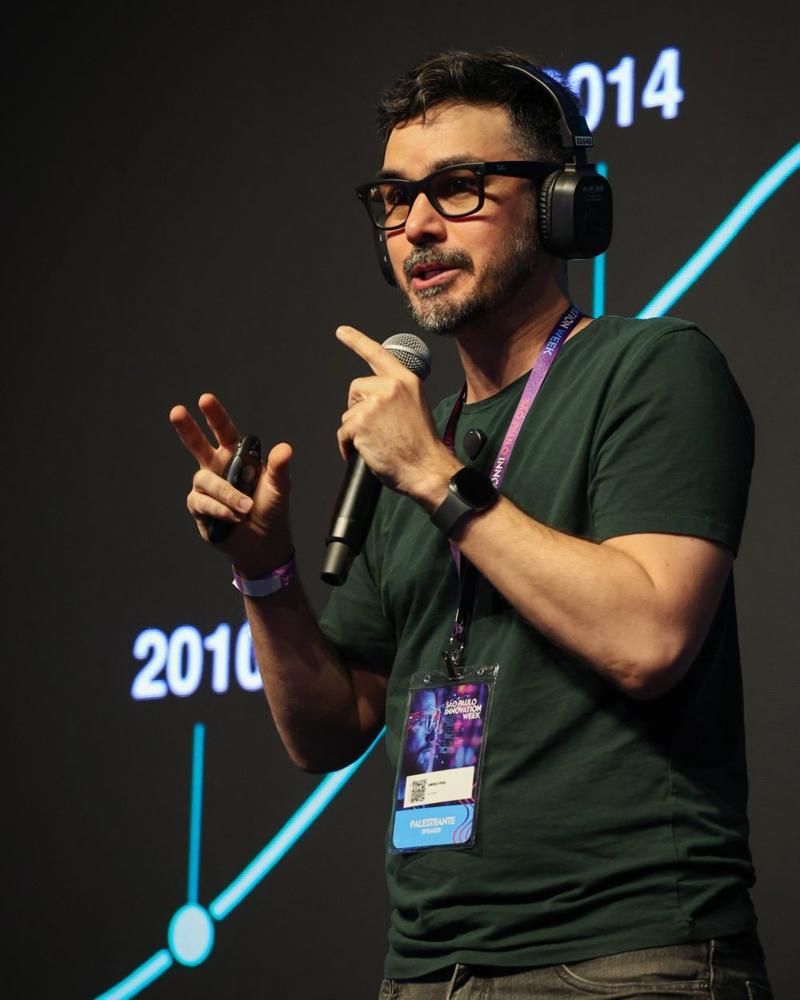

Talks and recognition
Twenty-four years of stages, VJ booths and classrooms.
From free software and VJing to internationally awarded augmented reality.

Highlights
Two decades on stage
Data journalism and open hardware
The TEDx Salvador talk "Redescobrindo Games"; Jeo workshops and three moderated debates on journalism and technology at Campus Party; a DustDuino workshop at an environmental journalists' meeting hosted at Google in San Francisco.
Jandig's busiest year
The talk "Jandig: art in augmented reality" and the panel "Copyleft Cities" at FISL (Porto Alegre); the SESC Sorocaba opening as an exhibiting artist ("VideoPong", "Electro-Organic Experiments"); Campus Party; Circuito Vivo Arte.mov.
Info-activism and VJing
Three sessions at FISL 11 in Porto Alegre, including the founding debate of the Free Video Alliance, and Campus Party in São Paulo.
Free-software beginnings
First talk in September 2002, in Salvador. A professional VJ career (2002 to 2018, "retired" after a performance in China); talks and workshops at FISL, Latinoware, the World Social Forum, and the Brazilian Digital Culture Forum.
Awards, programs and residencies
Claude for Open Source Program, Anthropic, for Jandig.
Invited by the United Nations to the OSPOs for Good Symposium.
Mozilla Open Source Support Award, for Jandig.
Software Livres Culturais award, from the Brazilian Ministry of Culture, for Jandig.
Hacker residency, Red Bull Basement.
Google Impact Challenge Brazil, for Rede InfoAmazonia.
Artist residency at Hangar, Barcelona (Chronica Mobilis).
SESC Sorocaba award, for "Electro-Organic Experiments".
Nimk/Vivo Arte.mov artist residency (Brazil/Netherlands).
CEMEC Creative Entrepreneurs award.
Estúdio Livre Collaboration Award.
In the press and on video
- TEDx Talks, 2013 Redescobrindo Games: VJ Pixel at TEDxSalvador (video)
- Mozilla Blog, 2019 MOSS 2018 year in review, listing Jandig among the seed awards
- Circuito Sesc de Artes, 2019 Realidades autônomas temporárias, on Jandig's tour of São Paulo state
- Google Impact Challenge Brazil, 2014 Project page for Rede InfoAmazonia, by Associação O Eco
- IJNet, 2013 On the Buenos Aires Media Party, where VJ Pixel showed MapPress
- Revista Select, 2012 Do artista ao articulador
- Revista Select, 2011 Jandig #CulturaDigitalBR
- VICE, 2011 Profile of memeLab and VJ Pixel
- Correio Braziliense, 2010 Full-page interview: "Brasil investe pouco em softwares livres" (print)
Field notes

A 360° circular installation covered in AR markers

Carnival: an AR intervention in the Rosas de Ouro parade

Urban intervention in Ouro Preto (Territorial Narratives)

Jandig's traveling exhibit at a SESC cultural center

Kids playing with AR marker cubes at a traveling workshop

Remexe collection: upcycled clothing tagged with AR markers

A talk on stage at Campus Party

Silkscreen workshop printing Jandig's visual identity